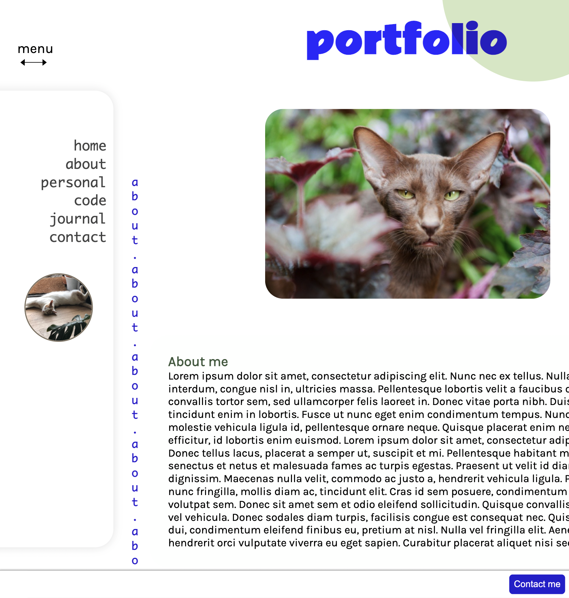
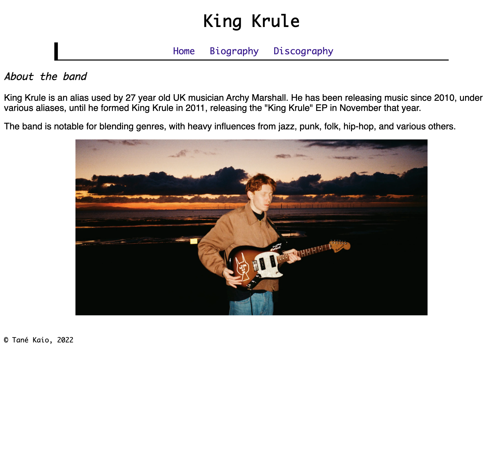
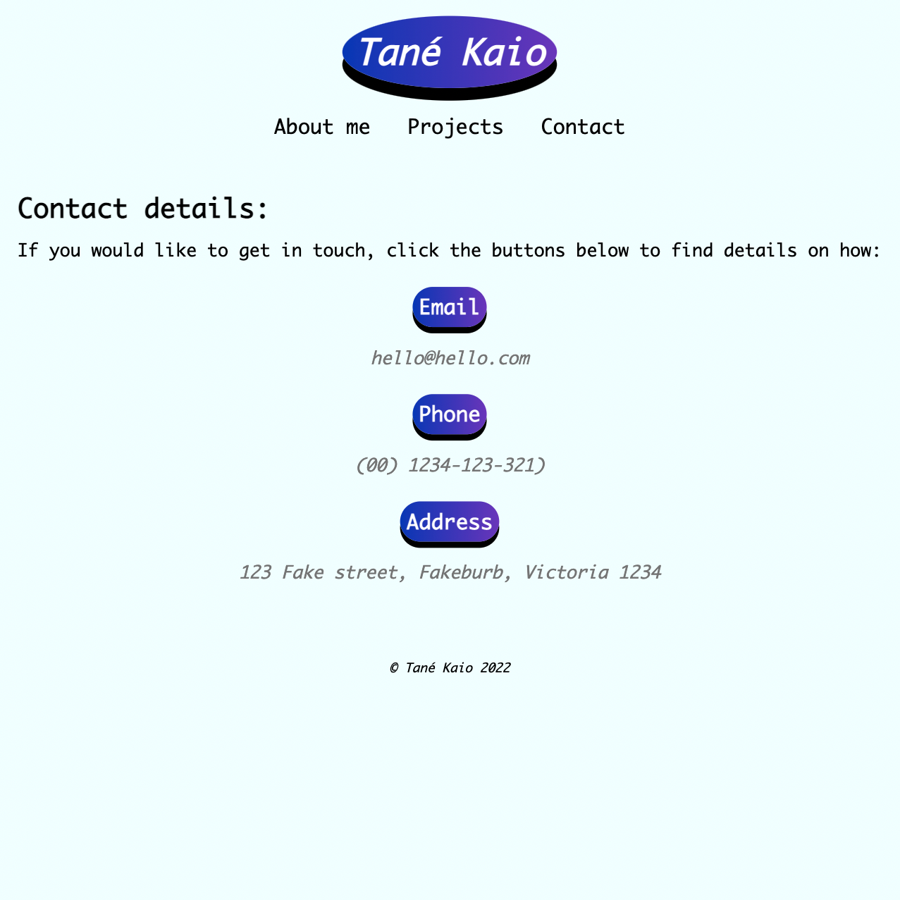
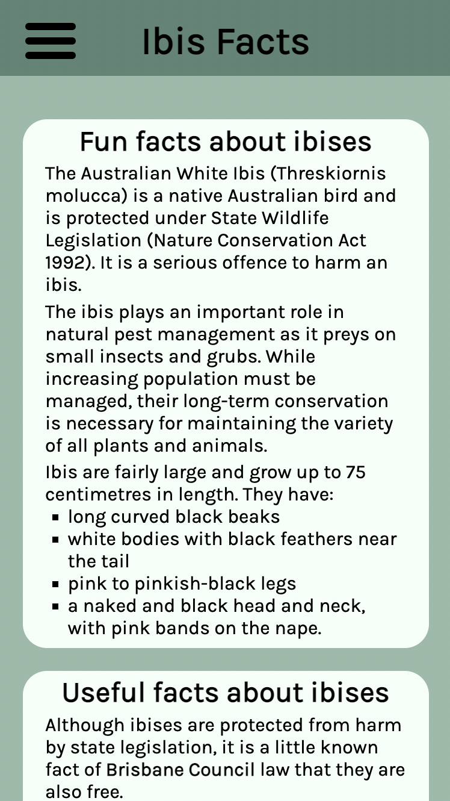

code
Portfolio

My portfolio site for Coder Academy's T1A2 assignment
Band webpage

Creating a page about a band I like using HTML.
:checked hide/show buttons

Learning how to create "buttons" with checkboxes and hiding/showing content with
them.
Responsive design challenge

Adding a hamburger nav-menu + practising responsive design using the mobile-first
principle.